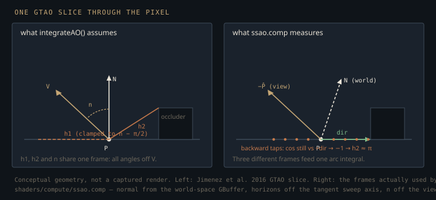

Monograph · Tree · ← Module hub · SSAO
deferred
SSAO
Screen-space AO pass + compute path.
A heightfield instead of rays
Ambient occlusion is a visibility integral: over the hemisphere above a shading point, what fraction of directions escape to the sky? Answering it honestly costs rays. SSAO is the answer you get without them — a single-layer heightfield of whatever the camera can see, read out of the depth buffer and steered by the GBuffer normal — and everything on this page is a consequence of trying to read occlusion out of that heightfield.
It is not, in this engine, what a frame leans on. An RTShadow and an RTGI compute pass are registered immediately after SSAO and trace against the renderer's TLAS, and `DeferredRenderer::initialize` enables each the moment its technique comes up:
m_useRTShadows = true;ohao/render/deferred/deferred_renderer.cpp:143`VulkanRenderer::renderDeferred` re-asserts the shadow flag on every deferred frame that has an acceleration structure, and nothing in the tree ever clears either one, so on RT-capable hardware with a populated TLAS both passes register and run. SSAO is the opt-in half of that split — its pipeline gate defaults false:
if (m_ssaoEnabled && m_ssaoPass) {ohao/render/deferred/post_processing_pipeline.cpp:67and the only production caller that opens it is `model_viewer`'s deferred path. A default deferred frame therefore dispatches no SSAO at all; what follows is what the dispatch computes when a caller does ask for it.
OHAO takes the horizon-marching reading rather than the older Crytek hemisphere-kernel one. Instead of scattering points inside a sphere and counting how many land behind the depth buffer — an estimator whose variance shows up as salt-and-pepper noise — it sweeps along the surface in a few azimuthal slices and asks, per slice, how high the skyline rises. That extracts a continuous estimate from very few taps, and its failure mode is banding rather than noise.
Steps per sweep are hard-coded in the shader:
int stepsPerDirection = 4;shaders/compute/ssao.comp:106and the direction count comes from the pass's sample-count field, default 8:
uint32_t m_sampleCount{8};ohao/render/deferred/ssao_pass.hpp:84Each direction runs two sweeps, forward and backward, giving 8 × 2 × 4 = 64 sweep taps; one more depth fetch happens before the direction loop to reconstruct the centre position. 65 depth fetches per pixel is therefore the ceiling, not the cost. A sky pixel takes exactly one and returns:
if (depth >= 1.0) {shaders/compute/ssao.comp:88and a sweep that walks off screen `break`s out of its remaining steps — which, as the next sections show, is not merely a saving. (Taps rejected by the radius test `continue` instead, after the fetch has already happened, so those still cost.) The dispatch is an 8×8 compute workgroup writing a single-channel `R16_SFLOAT` target.
The screen-space step length is not a constant in pixels. The shader takes the world radius, walks that far along the slice direction in 3D, projects the endpoint through the projection matrix, and divides the resulting UV delta into four steps — so the marched footprint shrinks correctly with distance:
vec2 deltaUV = (targetUV - uv) / float(stepsPerDirection);shaders/compute/ssao.comp:121The arc integral it borrows
The closed form the shader evaluates is the inner, per-slice arc integral of GTAO (Jimenez et al. 2016). For one azimuthal slice, with $h_1$ and $h_2$ the two horizon angles bounding the open arc and $n$ the angle between the slice-projected surface normal and the view vector, that integral is:
$A$ is the arc factor alone, not the slice's visibility. In the paper the slice contributes $A$ *scaled by the length of the normal projected into the slice plane*, and it is that weight which makes the per-slice results sum to a hemispherical integral. `ssao.comp` implements the bracket and drops the weight:
float a = (-cos(2.0 * h1 - n) + cos(n) + 2.0 * h1 * sin(n)) / 4.0;shaders/compute/ssao.comp:36In the source formulation the two horizon angles are **signed**: the derivation puts $h_1$ on one side of the view vector and $h_2$ on the other, both measured off that view vector, each clamped into the normal's hemisphere, $h_1 \leftarrow n + \max(-h_1-n,\,-\pi/2)$ and symmetrically for $h_2$. Under that convention $A(-\pi/2,\,\pi/2,\,0)=1$ — unoccluded sky — and $A(0,0,n)=0$, both horizons collapsed onto the view vector itself.
`ssao.comp` keeps neither the hemisphere clamp nor the projected-normal weight, and it also loses the sign. Both horizons are produced by `acos`:
h1 = acos(clamp(h1, -1.0, 1.0));shaders/compute/ssao.comp:128whose range is $[0,\pi]$, so $h_1$ can never be negative and the signed two-sided arc the closed form integrates cannot be represented at all. The clamps present in the file are the two `acos` domain clamps on the horizons, a third on the normal-view dot product, and one output clamp pinning the final AO into $[0,1]$; the hemisphere clamp is not among them. What the shader does instead is divide by $\pi$, average over directions, scale by `params.intensity`, and subtract from one, treating $A$ as occlusion rather than visibility:
ao = 1.0 - (ao / float(numDirections)) * params.intensity;shaders/compute/ssao.comp:138`params.intensity` is 1.0 in every frame this engine renders — the field defaults to `1.0f` in `ssao_pass.hpp` and the only wrapper that could change it, `PostProcessingPipeline::setSSAOIntensity`, has no callers in the tree. Every number below assumes that.

Three frames, one integral
The angles going into that formula are measured in three different spaces, and this is the most consequential thing in the unit.
The normal comes from the GBuffer, which stores octahedral-encoded **world**-space normals — the GBuffer vertex shader applies only the model matrix's normal matrix, never the view matrix:
fragNormal = normalize(normalMatrix * inNormal);shaders/core/gbuffer.vert:42The position, however, is reconstructed with the inverse **projection** matrix alone, so it lives in camera space. The shader then forms $n$ from one of each:
float n = acos(clamp(dot(normal, normalize(-viewPos)), -1.0, 1.0));shaders/compute/ssao.comp:132That dot product is only the normal-to-view angle when the view rotation is identity. Hold the *picture* fixed and yaw the camera, and $n$ changes anyway. A wall square-on to the camera at screen centre gives $\mathrm{normalize}(-\mathrm{viewPos}) = (0,0,1)$ either way, because that vector is view-space by construction; but its **world** normal is $(0,0,1)$ under an identity view rotation and $(1,0,0)$ once the camera has yawed 90° to face a wall that faces it. Same pixels, same geometry-to-camera relationship, $n = 0$ in the first case and $n = \pi/2$ in the second. The same mismatch propagates into the sweep: the tangent frame is built from the world normal, and `targetPos = viewPos + dir * radius` then adds that world-space direction to a camera-space point before projecting it.
The horizons are measured in a third frame again. `findHorizon`'s second parameter is named `viewDir`, but both calls pass `dir` — the in-plane sweep axis, not the view vector — and the *backward* sweep passes the same `dir` while stepping the opposite way in UV:
float h2 = findHorizon(viewPos, dir, uv, -deltaUV, stepsPerDirection);shaders/compute/ssao.comp:125On flat unoccluded ground the backward samples therefore sit at $\cos \approx -1$ against `+dir`, giving $h_2 \approx \pi$, while the forward samples give $h_1 \approx 0$. Substituting into the integral, the two cosine terms cancel and only the $2h\sin n$ term survives:
So an empty, unoccluded floor darkens by up to 50% purely as a function of $n$ — at full strength within 50 units of the camera, fading to no effect by 300, the two ends of the `smoothstep` falloff — and because $n$ is that world/view hybrid, the amount changes when the camera rotates. The worst case is exactly the geometry that ought to be safest: that same square-on wall under a yawed camera lands at $n \approx \pi/2$ and takes the full half-stop.
50% is not the ceiling either. `findHorizon` starts from a sentinel:
float horizon = -1.0;shaders/compute/ssao.comp:43and returns it unchanged whenever the first step leaves the screen (the loop `break`s) or every tap falls outside `params.radius` (every iteration `continue`s). Since $\arccos(-1)=\pi$, *no valid sample* is encoded as the most extreme horizon the parameterisation can express. When both sweeps degenerate, $A(\pi,\pi,n)/\pi=\sin n$ and $\mathrm{AO}=1-\sin n$ — fully black at $n=\pi/2$, and systematically so along the screen borders, where sweeps run out of buffer.
The extremum itself is then taken in the wrong direction. `findHorizon` keeps a running **maximum** of the cosine between the tap offset and the sweep axis:
horizon = max(horizon, h);shaders/compute/ssao.comp:68A tap displaced along the sweep axis gives $\cos \approx 1$; a tap that rises off the surface gives less. Maximising therefore selects the tap lying most nearly *along* the sweep — the flattest one — rather than the one rising highest above it. The search returns the bottom of the horizon profile, not the skyline. Worse, $A$'s $h_1$ term is identically zero at $h_1 = 0$, so one tap landing along the sweep axis returns $\cos \approx 1$, hence $h \approx 0$, and zeroes that sweep's half of the integral — an occluder further along the same sweep then cannot register at all. Correcting this means minimising the cosine, with the sentinel flipped to $+1$ — but as written, every darkening derived above comes from the degenerate paths (the backward sweep's inverted axis, the $-1$ sentinel), not from anything occluding anything.
Nor is the estimator monotone in its own input. Differentiating the $h_1$ term gives $\partial a/\partial h_1=\sin(h_1)\cos(h_1-n)$; on $h_1 \in [0,\pi]$ the sine is non-negative, so the sign is the sign of $\cos(h_1-n)$ — non-negative exactly on $|h_1-n| \le \pi/2$ and negative outside it, both above $n+\pi/2$ and below $n-\pi/2$. That window is $\pi$ wide and so is `acos`'s range, so unless $n = \pi/2$ exactly, part of the reachable range falls in the decreasing region: above $n+\pi/2$ when $n<\pi/2$, and below $n-\pi/2$ when $n>\pi/2$ — the grazing configuration this section has been about. In that range a taller occluder along the sweep contributes *less* occlusion than a shorter one. The closed form is well-behaved only on the signed domain it was derived for; this is not calibrated GTAO and should not be described as such.
The 4×4 noise that resolves to one texel
The 4×4 interleaved noise exists to rotate each pixel's tangent frame so the banding from eight fixed azimuths dithers away. Its addressing defeats it. The host packs the noise scale as (width/4, height/4):
static_cast<float>(m_width) / 4.0f,ohao/render/deferred/ssao_pass.cpp:106which is the multiplier the classic recipe applies to a **normalized** uv, giving a coordinate that advances exactly one noise texel per screen pixel. The shader multiplies it by the **pixel** coordinate instead:
vec2 noiseUV = vec2(coord) * params.noiseScale.xy;shaders/compute/ssao.comp:97Under the `NEAREST` + `REPEAT` sampler the pass creates for this image, the fetched texel index is $\lfloor u\cdot 4\rfloor \bmod 4$, and here $u\cdot 4 = \mathrm{coord}.x \cdot W$. For any width that is a multiple of four — the 1920×1080 default among them — that is identically 0, and the same argument runs down the columns:
m_noiseSampler = createSampler(VK_FILTER_NEAREST, VK_SAMPLER_ADDRESS_MODE_REPEAT);ohao/render/deferred/ssao_pass.cpp:298Every pixel on screen reads noise texel (0,0). There is no interleaving at all. The pass fills all sixteen texels once, at initialization, from an `std::mt19937` that `std::random_device` only seeds:
std::mt19937 gen(rd());ohao/render/deferred/ssao_pass.cpp:249Fifteen of those vectors are never sampled. One rotates the entire frame, and the banding the noise exists to break survives untouched.
That one vector is also mis-decoded. The host writes an already-signed unit vector in xy into an `R32G32B32A32_SFLOAT` image that stores the floats verbatim:
v = glm::vec4(dist(gen), dist(gen), 0.0f, 0.0f);ohao/render/deferred/ssao_pass.cpp:254and the shader applies the classic UNORM decode on top of it:
vec3 noise = texture(noiseTexture, noiseUV).rgb * 2.0 - 1.0;shaders/compute/ssao.comp:98so components land in $[-3,1]$ instead of $[-1,1]$ and z is pinned to $-1$ rather than 0. Because the host normalizes xy first, the decoded xy is $2(\cos t,\sin t)-(1,1)$ — a circle of radius 2 centred at $(-1,-1)$. The origin is strictly inside that circle, so the locus still winds once around it and every azimuth remains reachable; the damage is angular non-uniformity plus a constant $-1$ in z, not a collapse into one octant. The Gram-Schmidt that follows still produces a valid tangent, so nothing visibly breaks.
The `bias` push constant has a related fate. `execute` copies `m_bias` into the push block every frame:
params.bias = m_bias;ohao/render/deferred/ssao_pass.cpp:112and `ssao.comp` never references `params.bias` anywhere. `setRadius` is meaningful; `setBias` is inert.
Where the AO buffer goes
The pass hands its output to the deferred lighting pass, which writes it into descriptor binding 10 of its set:
writes[10].dstBinding = 10;ohao/render/deferred/deferred_lighting_pass.cpp:370`deferred_lighting.frag` declares samplers at bindings 0, 1, 2, 6, 9, 11, 13, 14 and 15. There is no binding 10. A descriptor set layout may legally carry bindings the shader never references, so this writes and validates cleanly and samples nothing. The `ao` the lighting math actually uses comes from the GBuffer's albedo alpha:
float ao = gBuffer2Sample.a;shaders/core/deferred_lighting.frag:169which the GBuffer pass fills with a constant 1.0 modulated by the red channel of a glTF occlusion-roughness-metallic texture when one exists:
ao *= rm.r; // R channel = AOshaders/core/gbuffer.frag:104That is baked texture AO, not screen-space AO. The lighting pass also raises an SSAO bit in its push-constant flags that the fragment shader never tests — it branches on 1, 4, 8, 16 and 32, never on 2:
if (m_ssaoView != VK_NULL_HANDLE) m_params.flags |= 2; // SSAOohao/render/deferred/deferred_lighting_pass.cpp:169The SSAO dispatch runs, writes a correct-shaped R16F buffer, transitions it to `SHADER_READ_ONLY`, and no shader in the tree samples it. Closing the gap takes three edits, not one: declare a `sampler2D` at binding 10, rewrite the `ao` term that currently reads the GBuffer alpha, and actually branch on the SSAO flag bit. The estimator has to be fixed first, though. Its horizon search maximises the wrong extremum, and its frame mismatches darken grazing geometry by half with no occluder present, and to black wherever both sweeps run off the screen.
The AO image is deliberately kept outside the render graph's barrier ledger: the pass transitions it itself, from `UNDEFINED` to `GENERAL` and then to `SHADER_READ_ONLY`, every frame. {{cite ohao/render/deferred/ssao_pass.cpp "VK_IMAGE_LAYOUT_UNDEFINED, VK_IMAGE_LAYOUT_GENERAL,"}} The rejected alternative was declaring it as a graph-tracked write, the way the GBuffer normal target is declared as a graph-tracked read for this pass. Keeping it self-managed makes the pass drop-in for any caller with a command buffer, at three costs. First, the graph imports the image as `ssao_output` — under the wrong format, `R8_UNORM` against an `R16_SFLOAT` image — but no pass ever declares it, so the graph's layout ledger and the real layout can drift: {{cite ohao/render/deferred/deferred_renderer.cpp "VK_FORMAT_R8_UNORM, w, h, VK_IMAGE_LAYOUT_UNDEFINED);"}} Second, starting each frame from `UNDEFINED` explicitly discards the previous contents, so no frame can amortise its taps against the last one. Third, the same blind spot covers the input side, where it has already cost something. The pass writes its depth descriptor with `VK_IMAGE_LAYOUT_SHADER_READ_ONLY_OPTIMAL`: {{cite ohao/render/deferred/ssao_pass.cpp "imageInfos[0].imageLayout = VK_IMAGE_LAYOUT_SHADER_READ_ONLY_OPTIMAL;"}} but the depth image it is handed is `GBufferPass`'s depth attachment, whose render pass resolves it to `VK_IMAGE_LAYOUT_DEPTH_STENCIL_READ_ONLY_OPTIMAL` and leaves it there: {{cite ohao/render/deferred/gbuffer_pass.cpp "attachments[4].finalLayout = VK_IMAGE_LAYOUT_DEPTH_STENCIL_READ_ONLY_OPTIMAL;"}} The declared and actual layouts disagree on every dispatch, and because the depth read is not declared to the graph either, nothing reconciles them.
Contracts
- `SSAOPass::onResize` destroys the descriptor pool and allocates a fresh, unwritten descriptor set. It does not re-write it. The deferred renderer's resize path must re-push the depth and normal views afterwards (`setDepthBuffer` / `setNormalBuffer` both call `updateDescriptorSet`) or the next `execute` binds an unwritten set.
- `execute()` early-outs unless both the depth and normal views are non-null, so a caller that never wires the GBuffer gets a silently absent pass rather than a crash.
- The pass samples two GBuffer attachments — depth at binding 0 and normal at binding 1, both routed in from `GBufferPass` through `PostProcessingPipeline` — so it must be dispatched after the GBuffer render pass has ended. Ordering is satisfied; layout agreement is not: binding 0 declares `SHADER_READ_ONLY_OPTIMAL` while the attachment is left in `DEPTH_STENCIL_READ_ONLY_OPTIMAL` (see the callout above). The render graph declares only the normal read; neither the depth read nor the AO write is declared, so one of the pass's three image dependencies is on the ledger.
- SSAO is off by default (`m_ssaoEnabled{false}`); the only production caller that enables it is `model_viewer`'s deferred path. Since nothing samples the result, enabling it currently costs up to 65 depth taps per pixel and changes no output pixel.
Source files
ohao/render/deferred/deferred_renderer.cppohao/render/deferred/post_processing_pipeline.cppshaders/compute/ssao.compohao/render/deferred/ssao_pass.hppshaders/core/gbuffer.vertohao/render/deferred/ssao_pass.cppohao/render/deferred/deferred_lighting_pass.cppshaders/core/deferred_lighting.fragshaders/core/gbuffer.fragParent hub for the full pipeline narrative; this page is the file-level design unit. Sitemap · hover glossary terms anywhere.